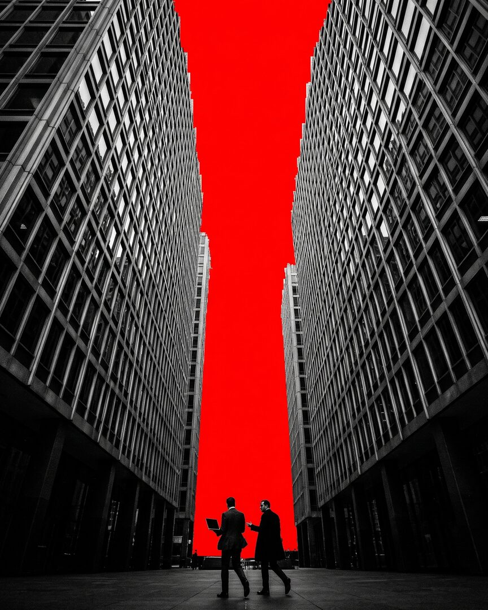
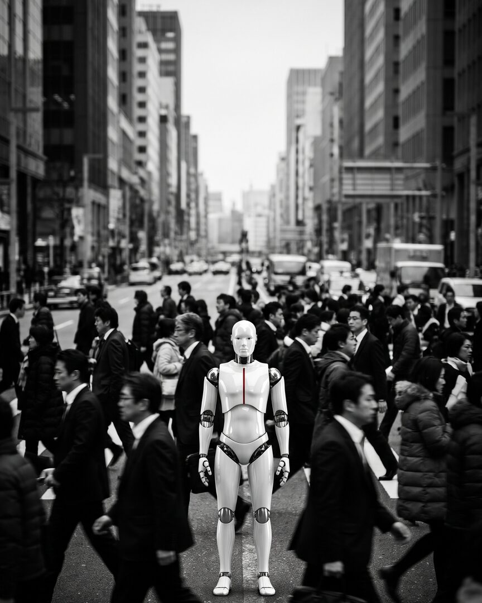
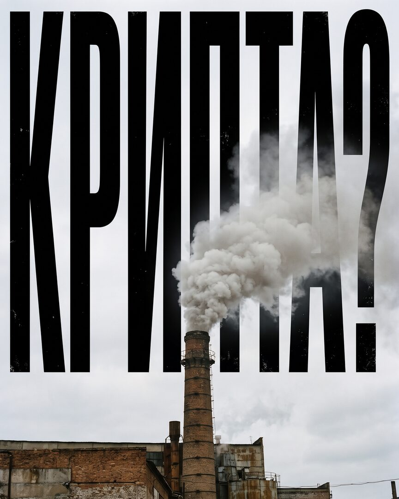
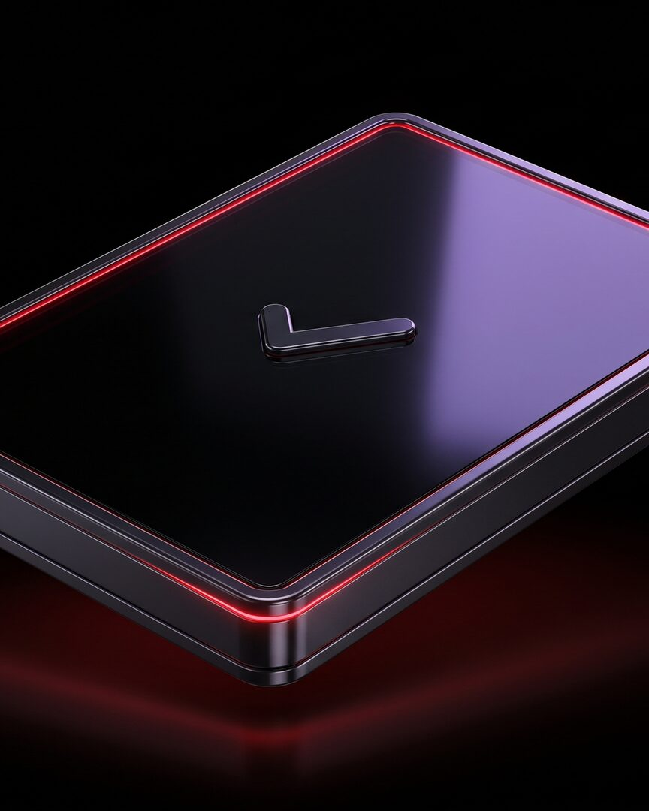

Оживление картинок
Роадмап, п.3. Текст никогда не анимирует модель: он стоит отдельным слоем кодом поверх видео. Без Higgsfield, бот не останавливался.
Красный вырез неба (ТОП)

⏳ Gemini Veo
Наезд снизу вверх между башнями, ближние этажи едут быстрее — объём; свет неба мерцает.
Один из серой толпы (ТОП)

⏳ Gemini Veo
Мягкий наезд с лёгким сдвигом: робот и ближние люди двигаются сильнее дальнего города.
Дым «КРИПТА?» (буквы нарисовала модель)

⏳ Gemini Veo
Ровный наезд без параллакса: иначе буквы модели гнутся. Живой дым кодом не вышел (тянет небо) — это задача для Gemini Veo.
3D-плитка «+194%» (конвейер Метеоры)

⏳ Gemini Veo
Плитка едет вместе с фоном и перекрывает цифры; текст — отдельным слоем кодом, не искажается; неон мерцает.
Сравнение путей
| 🆓 Gemini Veo (подписка) | 🆓 Параллакс кодом (локально) | |
|---|---|---|
| Что умеет | Настоящее движение: дым, люди, свет, физика | Только камера (наезд/сдвиг с объёмом по карте глубины) + мерцание света |
| Время | ориентир 1–3 мин на ролик (проверим) | 5–13 с на ролик 6 с |
| Лимиты | дневной лимит видео по подписке; очередь бота, человеческий темп | нет |
| Риски | ломает текст и лица → подаём кадр БЕЗ текста, текст кладём после | гнёт буквы, нарисованные моделью; дым живым не сделать |
| Статус | ⏳ нужны 2 операции в очереди бота (запрошено у строителя) | ✅ готово, 4 ролика выше |
Как это будет в боте: под готовой картинкой кнопка «🎞 Оживить» → бот берёт чистый кадр без текста → Gemini Veo (5–8 с: медленный наезд, дым/пар движется, свет мерцает) →
если Gemini занят/лимит — бесплатный параллакс кодом (≈10 с) → поверх накладывается слой текста кодом → mp4 в чат (вертикаль 4:5, для ТГ ≤ 20 МБ).